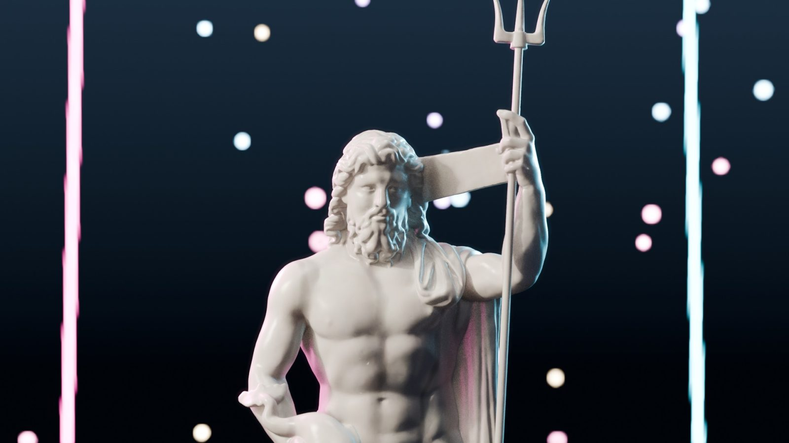
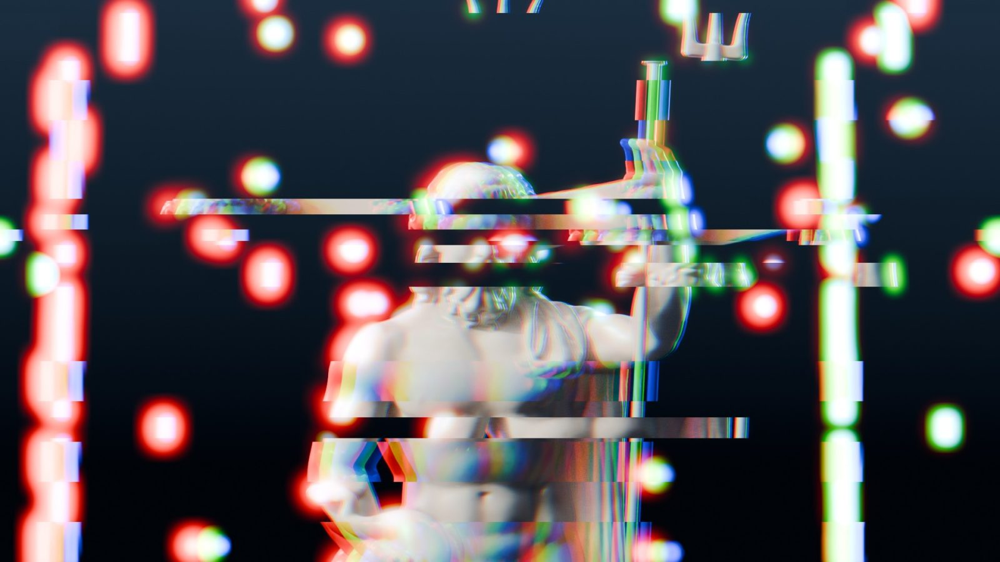
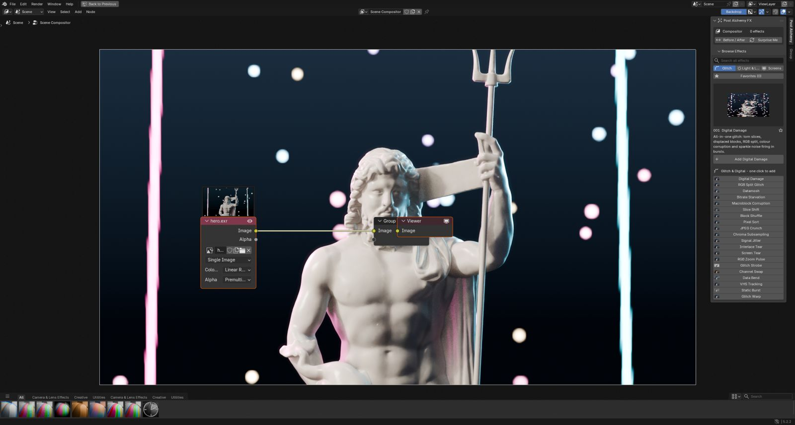
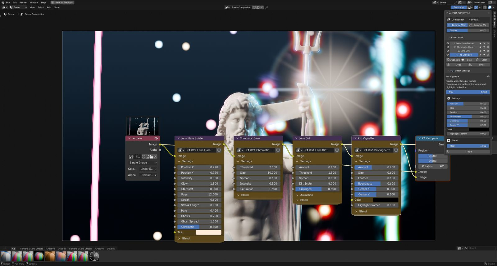
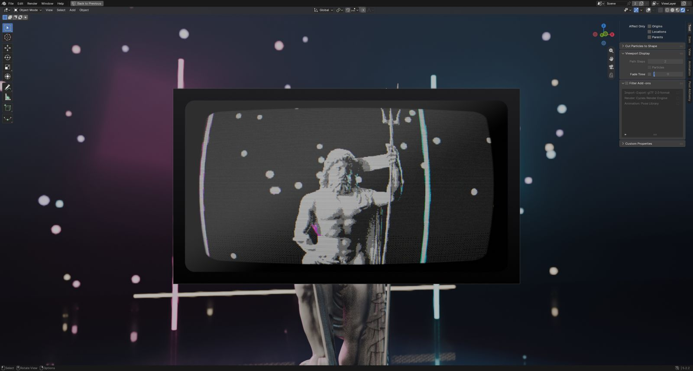
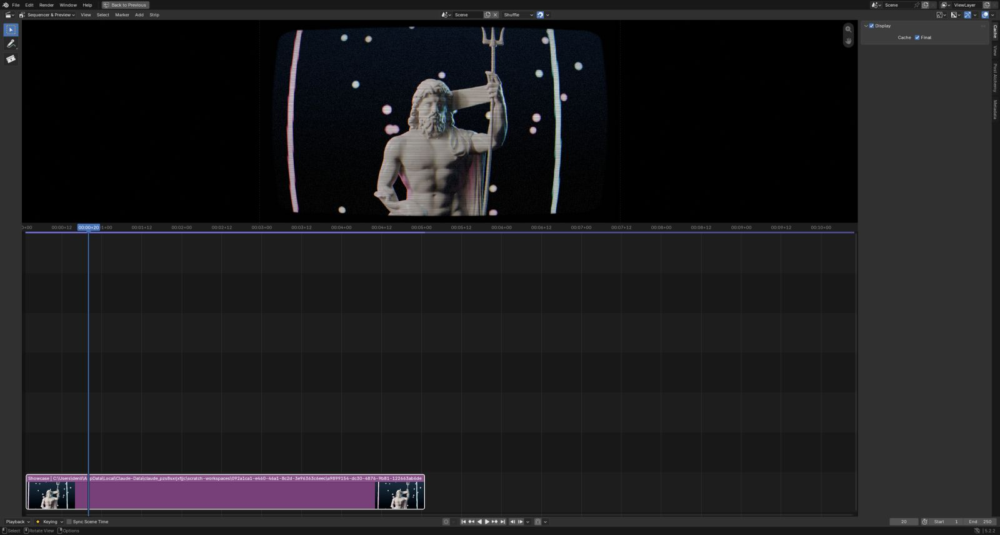

Post Alchemy FX
Glitch, glow and screen looks built as native compositor node groups. Click once to add an effect, stack as many as you like, and render at any resolution. Every effect is animated out of the box, with one switch to freeze it.


BeforeCyber GlitchLooks motion designers actually ship
No novelty filters. Each effect is one a client asks for by name, tuned to read well on a fast cut and to hold up on a big screen.
Three families, sixty effects
Glitch & Digital, Glow, Light & Lens, and Screens & Displays. None of them repeat a node Blender already ships. Select any effect to read what it does.
Sixteen finished looks, one click each
Presets are stacks of effects with tuned settings. Apply one, then change any value. Save your own stacks as presets too.
A sidebar panel, not a node maze
Browse with live thumbnails
The Post Alchemy tab lists every effect with a preview, a short description and search. One click adds the node group and wires it in.

Stack, reorder, solo
Your effects form a stack you can reorder, mute, solo, duplicate or randomize. Settings for the selected effect sit right under it, including Mix and an optional mask.

Compare before and after
Toggle a split view in the backdrop to judge a look against the clean frame, then turn it off again.

Everything under one shortcut
Press Ctrl Alt E for a pie menu with favorites, presets, Surprise Me and compare.
Compositor, Sequencer strips and the live viewport
Live in the 3D viewport
With viewport compositing on, the look updates while you move the camera and light the shot. This is the Arcade Cabinet preset on an Eevee scene.

On any video strip
Apply effects to Sequencer strips through a compositor modifier, so finished footage gets the same looks. Copy a stack and paste it onto every selected strip.

Engineered like a Blender feature
Resolution independent
Sizes are measured against 1080p and scale with the render. Preview at 720p, deliver in 4K, and the look matches.
Animated, with a switch
Glitches burst, glows breathe and screens roll by default. Turn off Animate to hold a single frame for stills.
Seed, speed and rate
Every animated effect has its own seed, speed and burst rate, so stacked effects never fire in lockstep.
HDR safe
Glows and screens handle scene-linear values above 1.0 without fireflies, negative colors or clipped highlights.
GPU compositor ready
Pure node groups with no scripts at render time. They run on the GPU compositor and on any render farm.
Mix and mask on everything
Blend any effect back with Mix, or limit it to a region with a mask input, without extra nodes.
Specifications
- Blender version
- 5.0 or newer
- Effects
- 60 (20 per family)
- Built-in presets
- 16, plus your own
- Editors
- Compositor, Sequencer, 3D viewport
- Render engines
- Eevee, Cycles, Workbench, footage
- Compositor device
- CPU and GPU
- Shortcut
- Ctrl Alt E pie menu
- Install
- Extension zip, drag and drop
- License
- GPL-3.0-or-later
- Made by
- LarkLab